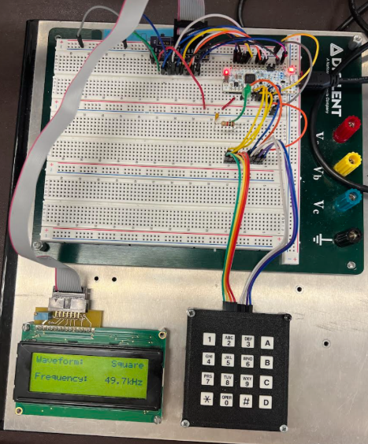
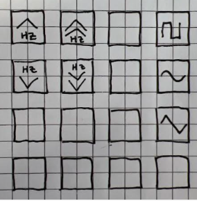
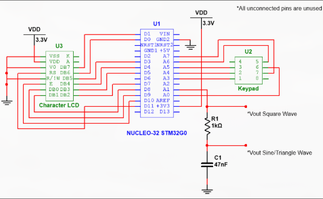
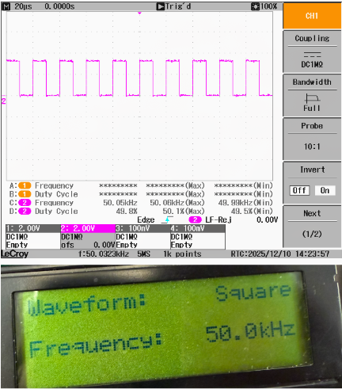
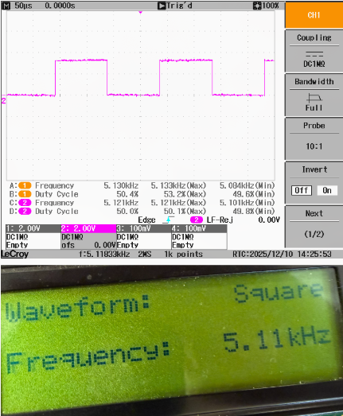
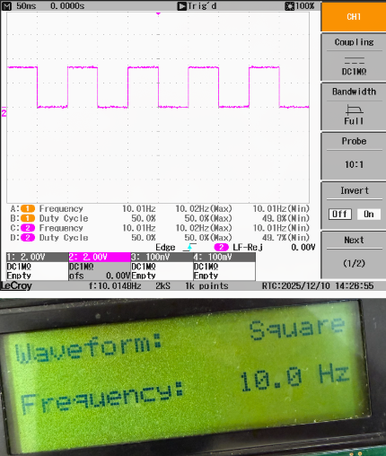
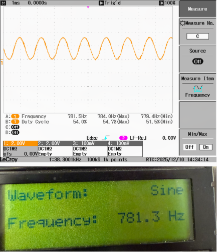
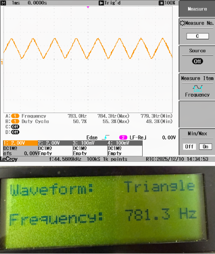

1. Overview
This project was completed as the final assignment for Digital Design Lab at the University of Oklahoma during the Fall 2025 semester. Working in a two-person team, we were given the flexibility to design a project by selecting a combination of embedded systems, features, and periherals from a list of requirements. We chose to develop a function generator because of the quantity of additional requirements we could select.
The goal of this project was to develop a Function Generator that could display sine, triangle, and square waveforms using Pulse Width Modualtion (PWM) and Direct Memory Access (DMA) on an STM32 Microcontroller. Square waves were generated over a frequecny range from 10 Hz to 50 kHz. A character LCD displayed the selected wavefrom type and frequency, while a matrix keypad allowed waveform type and frequency to be changed by a user.


The keypad pictured aboved allowed the user to switch waveforms using buttons A, B, and C respectively. Buttons 1 and 4 allowed the user to finely change the frequency, while buttons 2 and 6 allowed for coarse adjustments.
2. Schematic

The following components were used: STM32G031K8 Microcontroller, Vishay LCD-020N004X LCD, Grayhill 96BB2-006-R Keypad, 1 kOhm resistor, and 47 nF capacitor.
3. Direct Memory Access
DMA is a subsystem I spent a lot of time on, so I want highlight it here. While generating a square wave only required configuring the timer's PWM output, producing smooth sine and triangle waveforms required continuously updating the PWM duty cycle with a sequence of values.
Rather than having the CPU update the duty cycle on every timer period, DMA was used to transfer samples directly from a waveform lookup table stored in memory to the timer's compare register. Timer 2 was configured to generate a DMA request on each update event, causing the next sample in the lookup table to be written automatically. DMA operated in circular mode, allowing the waveform to repeat continuously without additional CPU intervention.
This approach significantly reduced processor usage and ensured that waveform samples were transferred with precise timing determined entirely by the hardware timer. The CPU remained free to handle the user interface, including keypad input and LCD updates, while the timer and DMA hardware generated the waveform independently.
DMA was enabled only for sine and triangle waveforms, where the duty cycle had to change every PWM period to approximate the desired analog signal after using a low-pass filter. Below is the code required to setup DMA for the use case above.
// Setup DMA
RCC_AHBENR &= ~(1 << 0);
RCC_AHBENR |= (1 << 0); // Enable DMA1 and DMAMUX Clock
DMA_CCR1 &= ~(1 << 0); //Disable DMA
DMA_CPAR1 = (uint32_t)&TIM2_CCR2; //DMA target register
DMA_IFCR = 0xF;
DMAMUX_C0CR = 31;
TIM2_DIER |= (1 << 8); // DMA on update
The below code is the function that sets the output of the function generator to the sine wave. It configures the timer, disables DMA, configures PWM, configures DMA, clears flags, forces timer update, enables DMA, and updates the LCD with the correct text using a custom LCD helper function.
void set_sine()
{
ARR = 1280;
TIM2_ARR = ((int)ARR);
DMA_CCR1 &= ~(1 << 0); // Disable DMA
// PWM MODE
TIM2_CCMR1 &= ~(7 << 12);
TIM2_CCMR1 |= (6 << 12) | (1 << 11); // PWM and pre-load
TIM2_CCER |= (1 << 4);
// DMA CONFIG
DMA_CPAR1 = (uint32_t)&TIM2_CCR2;
DMA_CMAR1 = (uint32_t)sine_lut;
DMA_CNDTR1 = 64;
DMA_CCR1 = (1 << 7) | (1 << 5) | (1 << 4) | (2 << 8) | (2 << 10);
DMA_IFCR = 0xF; // Clear flags
TIM2_EGR |= (1 << 0); // Force timer update
DMA_CCR1 |= (1 << 0); // Enable DMA
TIM2_DIER |= (1 << 8); // DMA requests on update
// Write name to LCD
LCD_Control(0,0,0,0,0,0,0,0,1);
wait_ms(2);
LCD_Control(0,0,0,0,0,0,0,1,1); // Return home
wait_ms(2);
LCD_Write_Row('W','a','v','e','f','o','r','m',':',' ',' ',' ',' ',' ',' ',' ','S','i','n','e');
LCD_Write_Row('F','r','e','q','u','e','n','c','y',':',' ',' ','7','8','1','.','3',' ','H','z');
}
4. Testing
The generated waveforms were validated using an oscilloscope. Below are some select waveforms.





5. Resources
This page was compiled from the final report which you can view below.
View Final Report